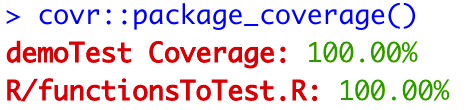
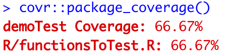

# the fuction
#' writeToFile
#' @description Write a data frame to csv
#' @param df the data frame
#' @param pathFile the path to save the file to\
#' @return Nothing
writeToFile <- function(df, pathFile){
write.csv(df, file = pathFile)
}
# the test
test_that("writeToFile",{
# tell withr that we want to create a file. The file must be deleted
# when tests are done
withr::local_file(here::here("file1.csv"), {})
writeToFile(mtcars, here::here('file1.csv'))
# test that the file exists
expect_true(file.exists(here::here('file1.csv')))
# test that is has 32 rows (mtcars data frame)
expect_equal(foo2(here::here('file1.csv')), 32)
})In this second part
- Test fixtures
- Mocking
- Test coverage
You can find part 1 here.
Test fixtures
Take nothing but memories, leave nothing but footprints. ― Chief Si’ahl
Let’s crank up the complexity a notch. Suppose you want to test things in your code that create files, or change global options or variables. When you do this, you want to clean up after yourself. You do not want to leave behind a pile of test files, or to change some global options that affect how you would normally use R.
How can we clean up after ourselves? The traditional approach is to use the setup() and teardown() functions from testthat. In recent releases, testthat recommends to replace those functions with test fixtures from the withr package. I agree. Test fixtures are a bit more complex to understand, but they are much cleaner.
In simple terms, when you work with withr you perform these steps:
- Link withr with a test or a funciton. This can be as simple as writing the withr call inside the function or the test.
- Instruct withr on what you need: i.e. create a file or change a global option.
- Run your code normally
withr will take it from here. Once the function or test finishes, withr will clean up after itself. Any file created by withr will be deleted. Any global option changed by withr will be restored. And it will do that even if the function or the test fails with an error.
Enough of theory, let’s see how to actually use withr’s test fixtures.
In this first example, you want to test a function that writes a file. Of course, you do not want to leave the file around after we run the tests. Here is the combination of the function and its test.
The function withr::local_file() creates the csv file. Once all the tests inside test_that() finish withr deletes the file. If we run file.exists(here::here("file1.csv")) after the test_that() chunk, the result will be FALSE. This is important to remember: the file exists only while this test_that() runs, not while other tests are running. This guarantees that tests do not interfere with each other.
Let’s try another example. Let’s say you have a function that prints some message to the console only if the global option verbose is TRUE (the default is FALSE).
#' verboseFunction
#' @description Output a message if isTRUE(getOption("verbose"))
#' @return NULL
verboseFunction <- function(){
if(isTRUE(getOption("verbose"))){
message('Running in verbose mode')
}
return(NULL)
}You want to test that the function works with both verbose settings, but you do not want to affect the global value for verbose. You want its value to change only while the test is running.
You could do this:
test_that("verboseFunction",{
# set option verbose to FALSE
options(verbose=FALSE)
expect_message(verboseFunction(), regexp = NA)
expect_null(verboseFunction())
# set option verbose to TRUE
options(verbose=TRUE)
expect_message(verboseFunction(), 'Running in verbose mode')
expect_null(verboseFunction())
# reset option verbose to default FALSE
options(verbose=FALSE)
})This is a bad solution because it is not guaranteed that we reset the variables. If we have a failing test, the reset will not run.
A better option is to use withr, which is guaranteed to run even in case of a failure.
test_that("verboseFunction",{
# case for verbose = FALSE
withr::local_options(verbose=FALSE)
expect_message(verboseFunction(), regexp = NA)
expect_null(verboseFunction())
# case for verbose = TRUE
withr::local_options(verbose=TRUE)
expect_message(verboseFunction(), 'Running in verbose mode')
expect_null(verboseFunction())
})If you now run from the console getOptions("verbose"), you will see that this is still the default FALSE. Your tests did not change the default settings you used.
Mocking
Often our code depends on external components, like a database. It is not a good idea to have tests depending on external components. If you create a test dependency on a database, for example, you might start to see test failures caused by the database being offline, or a changed in the data. All these failures have nothing to do with your code.
Mocking removes these external dependencies. The easiest way to implement mocking is with the package mockery. In mockeryyou need to tell R which function you want to mock (aka stub the function), and provide a mocked output.
Let’s say you have a function like this:
#' getDataFromDb
#' @description Query the database to get the max value of field mpg
#' @param con A connection object
#' @param queryStr A string with the query
#' @return An integer
getDataFromDb <- function(con, queryStr){
res <- DBI::dbExecute(con, queryStr)
res <- max(res$mpg)
return(res)
}This function takes in a connection object and a query string, executes the statement, and then returns the max in the column mpg. Incidentally, note that this is not great coding, as the function does two things. However, let’s use it for the sake of this demo.
When you test this function you want control over the call to DBI::dbExecute(). You do not want to run an actual call to the database. Let’s create a mock function.
# function to mock a database call. Always returns mtcars
mockDbCall <- function(con, queryStr){
return(mtcars)
}Note that this function mocks getDataFromDb(): it must have the same arguments, even if they are not used.
OK, now you need to link getDataFromDb() with mockDbCall(). This is called creating a stub. To do this, you simply add a stub statement inside your testing.
test_that("getDataFromDb",{
# function to mock a database call. Always returns mtcars
mockDbCall <- function(con, queryStr){
return(mtcars)
}
mockery::stub(getDataFromDb, "DBI::dbExecute", mockDbCall)
expect_equal(getDataFromDb(NULL, 'hello'), 33.9)
})In the context of the test, every time you call getDataFromDb() the internal call to DBI::dbExecute() is rerouted to mockDbCall(), which we have complete control over. You can leave testing the connection to the database to the integration testing, not the unit testing.
Test coverage
Test coverage is the percentage of your code that has been tested. Test coverage is a very important metric. In some professional settings, you are not allowed to merge code if the coverage is not at least some percentage, typically around 75%.
How can you calculate test coverage in R? You use the covr package. From the console, run covr::package_coverage().

The results above assume you have followed this tutorial and created all the functions and tests. You can verify what happens if you remove some tests. For instance, if you remove the tests for mocking, this is going to be the result:

Wrap up
In this mini series on unit testing in R we saw how we can test our R code in a variety of different scenarios and using different techniques:
- Basic unit testing building block: use
testthat - Helper functions: use files in
tests/testthatwith the prefixtest-. - Test fixtures: use
withr. - Mocking: use
mockery. - quantify test coverage: use
covr.
Hopefully you are now able to test your code and demonstrate to yourself and other people that it works. Or that at least it does not fail.